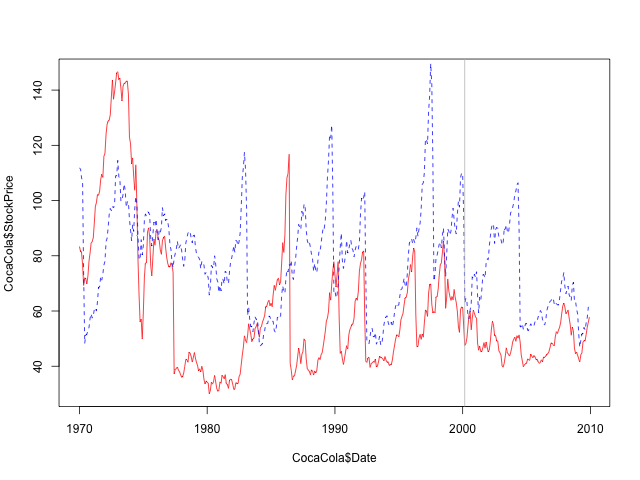
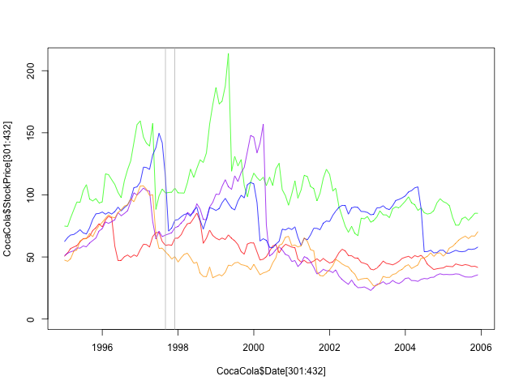

Homework Week 1
Homework week 1 part 1. An analytical detective.
1 An analytical detective
Crime is an international concern, but it is documented and handled in very different ways in different countries. In the United States, violent crimes and property crimes are recorded by the Federal Bureau of Investigation (FBI). Additionally, each city documents crime, and some cities release data regarding crime rates. The city of Chicago, Illinois releases crime data from 2001 onward online.
Chicago is the third most populous city in the United States, with a population of over 2.7 million people. The city of Chicago is shown in the map below, with the state of Illinois highlighted in red.
There are two main types of crimes: violent crimes, and property crimes. In this problem, we'll focus on one specific type of property crime, called "motor vehicle theft" (sometimes referred to as grand theft auto). This is the act of stealing, or attempting to steal, a car. In this problem, we'll use some basic data analysis in R to understand the motor vehicle thefts in Chicago.
Please download the file mvtWeek1.csv for this problem (do not open this file in any spreadsheet software before completing this problem because it might change the format of the Date field). Here is a list of descriptions of the variables:
- ID: a unique identifier for each observation
- Date: the date the crime occurred
- LocationDescription: the location where the crime occurred
- Arrest: whether or not an arrest was made for the crime (TRUE if an arrest was made, and FALSE if an arrest was not made)
- Domestic: whether or not the crime was a domestic crime, meaning that it was committed against a family member (TRUE if it was domestic, and FALSE if it was not domestic)
- Beat: the area, or "beat" in which the crime occurred. This is the smallest regional division defined by the Chicago police department.
- District: the police district in which the crime occured. Each district is composed of many beats, and are defined by the Chicago Police Department.
- CommunityArea: the community area in which the crime occurred. Since the 1920s, Chicago has been divided into what are called "community areas", of which there are now 77. The community areas were devised in an attempt to create socially homogeneous regions.
- Year: the year in which the crime occurred.
- Latitude: the latitude of the location at which the crime occurred.
- Longitude: the longitude of the location at which the crime occurred.
1.1 Problem 1.1 - Loading the Data (1 point possible)
Read the dataset mvtWeek1.csv into R, using the read.csv function, and call the data frame "mvt". Remember to navigate to the directory on your computer containing the file mvtWeek1.csv first. It may take a few minutes to read in the data, since it is pretty large. Then, use the str and summary functions to answer the following questions.
How many rows of data (observations) are in this dataset?
1.1.1 Download the data sets
In this part we can download the data
rm(list = ls()) # Remove all workspace data library(parallel) if(!file.exists("../data")) { dir.create("../data") } fileUrl <- "https://courses.edx.org/asset-v1:MITx+15.071x_2a+2T2015+type@asset+block/mvtWeek1.csv" fileName <- "mvtWeek1.csv" dataPath <- "../data" filePath <- paste(dataPath, fileName, sep = "/") if(!file.exists(filePath)) { download.file(fileUrl, destfile = filePath, method = "curl") list.files("../data") dateDownloaded <- date() }
writeLines(" Loading data into mvt dataframe") mvt <- read.table(filePath, sep = ",", header = TRUE) writeLines(" Initial analysis of data mvt") dim(mvt) str(mvt)
Loading data into mvt dataframe
Initial analysis of data mvt
[1] 191641
'data.frame': 191641 obs. of 11 variables:
$ ID : int 8951354 8951141 8952745 8952223 8951608 8950793 8950760 8951611 8951802 8950706 ...
$ Date : Factor w/ 131680 levels "1/1/01 0:01",..: 42823 42822 42822 42822 42821 42820 42819 42818 42816 42815 ...
$ LocationDescription: Factor w/ 78 levels "ABANDONED BUILDING",..: 72 72 62 72 72 72 72 72 72 72 ...
$ Arrest : logi FALSE FALSE FALSE FALSE FALSE TRUE ...
$ Domestic : logi FALSE FALSE FALSE FALSE FALSE FALSE ...
$ Beat : int 623 1213 1622 724 211 2521 423 231 1021 1215 ...
$ District : int 6 12 16 7 2 25 4 2 10 12 ...
$ CommunityArea : int 69 24 11 67 35 19 48 40 29 24 ...
$ Year : int 2012 2012 2012 2012 2012 2012 2012 2012 2012 2012 ...
$ Latitude : num 41.8 41.9 42 41.8 41.8 ...
$ Longitude : num -87.6 -87.7 -87.8 -87.7 -87.6 ...
1.1.2 Answer
191641 observations.
1.2 Problem 1.2 - Loading the Data (1 point possible)
How many variables are in this dataset?
writeLines(" Dimension of the dataframe") dim(mvt) writeLines(" Names of the dataframe") names(mvt) writeLines(" Any NA in the dataframe") anyNA(mvt)
Dimension of the dataframe
[1] 191641 11
Names of the dataframe
[1] "ID" "Date" "LocationDescription"
[4] "Arrest" "Domestic" "Beat"
[7] "District" "CommunityArea" "Year"
[10] "Latitude" "Longitude"
Any NA in the dataframe
[1] TRUE
1.2.1 Answer
11 variables.
1.3 Problem 1.3 - Loading the Data (1 point possible)
Using the "max" function, what is the maximum value of the variable "ID"?
maxID <- mvt[which.max(mvt$ID), ]
maxID$ID
[1] 9181151
1.3.1 Answer
9181151
1.4 Problem 1.4 - Loading the Data (1 point possible)
What is the minimum value of the variable "Beat"?
minBeat <- mvt[which.min(mvt$Beat), ]
minBeat$Beat
[1] 111
1.4.1 Answer
111
1.5 Problem 1.5 - Loading the Data (1 point possible)
How many observations have value TRUE in the Arrest variable (this is the number of crimes for which an arrest was made)?
TArrest <- subset(mvt, Arrest == TRUE) dim(TArrest)
[1] 15536
1.5.1 Answer
15536
1.6 Problem 1.6 - Loading the Data (1 point possible)
How many observations have a LocationDescription value of ALLEY?
dim(subset(mvt, LocationDescription == "ALLEY"))
[1] 2308
1.6.1 Answer
2308
1.7 Problem 2.1 - Understanding Dates in R (1 point possible)
In many datasets, like this one, you have a date field. Unfortunately, R does not automatically recognize entries that look like dates. We need to use a function in R to extract the date and time. Take a look at the first entry of Date (remember to use square brackets when looking at a certain entry of a variable).
In what format are the entries in the variable Date?
head(mvt$Date, 1)
[1] 12/31/12 23:15 131680 Levels: 1/1/01 0:01 1/1/01 0:05 1/1/01 0:30 1/1/01 10:00 ... 9/9/12 9:50
1.7.1 Answer
If you type mvt$Date1 in your R console, you can see that the first entry is 12/31/12 23:15. This must be in the format Month/Day/Year Hour:Minute.
1.8 Problem 2.2 - Understanding Dates in R (1 point possible)
Now, let's convert these characters into a Date object in R. In your R console, type
DateConvert = as.Date(strptime(mvt$Date, "%m/%d/%y %H:%M"))
This converts the variable "Date" into a Date object in R. Take a look at the variable DateConvert using the summary function.
What is the month and year of the median date in our dataset? Enter your answer as "Month Year", without the quotes. (Ex: if the answer was 2008-03-28, you would give the answer "March 2008", without the quotes.)
DateConvert <- as.Date(strptime(mvt$Date, "%m/%d/%y %H:%M")) class(DateConvert) summary(DateConvert)
[1] "Date"
Min. 1st Qu. Median Mean 3rd Qu. Max.
"2001-01-01" "2003-07-10" "2006-05-21" "2006-08-23" "2009-10-24" "2012-12-31"
1.8.1 Answer
The median date is May 2006
1.9 Problem 2.3 - Understanding Dates in R (1 point possible)
Now, let's extract the month and the day of the week, and add these variables to our data frame mvt. We can do this with two simple functions. Type the following commands in R:
mvt$Month = months(DateConvert) mvt$Weekday = weekdays(DateConvert)
This creates two new variables in our data frame, Month and Weekday, and sets them equal to the month and weekday values that we can extract from the Date object. Lastly, replace the old Date variable with DateConvert by typing:
mvt$Date = DateConvert
Using the table command, answer the following questions.
In which month did the fewest motor vehicle thefts occur?
head(mvt, 3) table(mvt$Month)
ID Date LocationDescription Arrest Domestic Beat
1 8951354 2012-12-31 STREET FALSE FALSE 623
2 8951141 2012-12-31 STREET FALSE FALSE 1213
3 8952745 2012-12-31 RESIDENTIAL YARD (FRONT/BACK) FALSE FALSE 1622
District CommunityArea Year Latitude Longitude Month Weekday
1 6 69 2012 41.75628 -87.62164 December Monday
2 12 24 2012 41.89879 -87.66130 December Monday
3 16 11 2012 41.96919 -87.76767 December Monday
April August December February January July June March
15280 16572 16426 13511 16047 16801 16002 15758
May November October September
16035 16063 17086 16060
1.9.1 Answer
February.
1.10 Problem 2.4 - Understanding Dates in R (1 point possible)
On which weekday did the most motor vehicle thefts occur?
head(mvt, 3) table(mvt$Weekday)
ID Date LocationDescription Arrest Domestic Beat
1 8951354 2012-12-31 STREET FALSE FALSE 623
2 8951141 2012-12-31 STREET FALSE FALSE 1213
3 8952745 2012-12-31 RESIDENTIAL YARD (FRONT/BACK) FALSE FALSE 1622
District CommunityArea Year Latitude Longitude Month Weekday
1 6 69 2012 41.75628 -87.62164 December Monday
2 12 24 2012 41.89879 -87.66130 December Monday
3 16 11 2012 41.96919 -87.76767 December Monday
Friday Monday Saturday Sunday Thursday Tuesday Wednesday
29284 27397 27118 26316 27319 26791 27416
1.10.1 Answer
Friday.
1.11 Problem 2.5 - Understanding Dates in R (1 point possible)
Each observation in the dataset represents a motor vehicle theft, and the Arrest variable indicates whether an arrest was later made for this theft. Which month has the largest number of motor vehicle thefts for which an arrest was made?
table(mvt$Month, mvt$Arrest)
FALSE TRUE
April 14028 1252
August 15243 1329
December 15029 1397
February 12273 1238
January 14612 1435
July 15477 1324
June 14772 1230
March 14460 1298
May 14848 1187
November 14807 1256
October 15744 1342
September 14812 1248
1.11.1 Answer
If you type table(mvt$Arrest,mvt$Month), you can see that the largest number of observations with Arrest=TRUE occurs in the month of January.
1.12 Problem 3.1 - Visualizing Crime Trends (3 points possible)
Now, let's make some plots to help us better understand how crime has changed over time in Chicago. Throughout this problem, and in general, you can save your plot to a file. For more information, this website very clearly explains the process.
First, let's make a histogram of the variable Date. We'll add an extra argument, to specify the number of bars we want in our histogram. In your R console, type

Looking at the histogram, answer the following questions.
1.12.1 In general, does it look like crime increases or decreases from 2002 - 2012?
1.12.1.1 Answer
Decreases Decreases - correct
1.12.2 In general, does it look like crime increases or decreases from 2005 - 2008?
1.12.2.1 Answer
Decreases Decreases - correct
1.12.3 In general, does it look like crime increases or decreases from 2009 - 2011?
1.12.4 Answer
Increases Increases - correct
1.13 Problem 3.2 - Visualizing Crime Trends (1 point possible)
Now, let's see how arrests have changed over time. Create a boxplot of the variable "Date", sorted by the variable "Arrest" (if you are not familiar with boxplots and would like to learn more, check out this tutorial). In a boxplot, the bold horizontal line is the median value of the data, the box shows the range of values between the first quartile and third quartile, and the whiskers (the dotted lines extending outside the box) show the minimum and maximum values, excluding any outliers (which are plotted as circles). Outliers are defined by first computing the difference between the first and third quartile values, or the height of the box. This number is called the Inter-Quartile Range (IQR). Any point that is greater than the third quartile plus the IQR or less than the first quartile minus the IQR is considered an outlier.

Does it look like there were more crimes for which arrests were made in the first half of the time period or the second half of the time period? (Note that the time period is from 2001 to 2012, so the middle of the time period is the beginning of 2007.)
1.13.1 Answer
First half.
You can create the boxplot with the command boxplot(mvt$Date ~ mvt$Arrest). If you look at the boxplot, the one for Arrest=TRUE is definitely skewed towards the bottom of the plot, meaning that there were more crimes for which arrests were made in the first half of the time period.
1.14 Problem 3.3 - Visualizing Crime Trends (2 points possible)
Let's investigate this further. Use the table function for the next few questions.
For what proportion of motor vehicle thefts in 2001 was an arrest made?
Note: in this question and many others in the course, we are asking for an answer as a proportion. Therefore, your answer should take a value between 0 and 1.
library(lubridate) mvt$Year <- year(mvt$Date) table(mvt$Year, mvt$Arrest) writeLines("\n Proportion of vehicle thefts in 2001:") print(2152 / (2152 + 18517))
FALSE TRUE
2001 18517 2152
2002 16638 2115
2003 14859 1798
2004 15169 1693
2005 14956 1528
2006 14796 1302
2007 13068 1212
2008 13425 1020
2009 11327 840
2010 14796 701
2011 15012 625
2012 13542 550
Proportion of vehicle thefts in 2001:
[1] 0.1041173
1.14.1 Answer
If you create a table using the command table(mvt$Arrest, mvt$Year), the column for 2001 has 2152 observations with Arrest=TRUE and 18517 observations with Arrest=FALSE. The fraction of motor vehicle thefts in 2001 for which an arrest was made is thus
2152/(2152+18517) = 0.1041173.
1.15 Problem 3.4 - Visualizing Crime Trends (1 point possible)
For what proportion of motor vehicle thefts in 2007 was an arrest made?
library(lubridate) mvt$Year <- year(mvt$Date) table(mvt$Year, mvt$Arrest) writeLines("\n Proportion of vehicle thefts in 2007:") print(1212 / (13068 + 1212))
FALSE TRUE
2001 18517 2152
2002 16638 2115
2003 14859 1798
2004 15169 1693
2005 14956 1528
2006 14796 1302
2007 13068 1212
2008 13425 1020
2009 11327 840
2010 14796 701
2011 15012 625
2012 13542 550
Proportion of vehicle thefts in 2007:
[1] 0.08487395
1.15.1 Answer
If you create a table using the command table(mvt$Arrest, mvt$Year), the column for 2007 has 1212 observations with Arrest=TRUE and 13068 observations with Arrest=FALSE. The fraction of motor vehicle thefts in 2007 for which an arrest was made is thus
1212/(1212+13068) = 0.08487395.
1.16 Problem 3.5 - Visualizing Crime Trends (1 point possible)
For what proportion of motor vehicle thefts in 2012 was an arrest made?
library(lubridate) mvt$Year <- year(mvt$Date) table(mvt$Year, mvt$Arrest) writeLines("\n Proportion of vehicle thefts in 2012:") print(550 / (13542 + 550))
FALSE TRUE
2001 18517 2152
2002 16638 2115
2003 14859 1798
2004 15169 1693
2005 14956 1528
2006 14796 1302
2007 13068 1212
2008 13425 1020
2009 11327 840
2010 14796 701
2011 15012 625
2012 13542 550
Proportion of vehicle thefts in 2012:
[1] 0.03902924
Since there may still be open investigations for recent crimes, this could explain the trend we are seeing in the data. There could also be other factors at play, and this trend should be investigated further. However, since we don't know when the arrests were actually made, our detective work in this area has reached a dead end.
1.16.1 Answer
If you create a table using the command table(mvt$Arrest, mvt$Year), the column for 2012 has 550 observations with Arrest=TRUE and 13542 observations with Arrest=FALSE. The fraction of motor vehicle thefts in 2012 for which an arrest was made is thus
550/(550+13542) = 0.03902924.
1.17 Problem 4.1 - Popular Locations (1 point possible)
Analyzing this data could be useful to the Chicago Police Department when deciding where to allocate resources. If they want to increase the number of arrests that are made for motor vehicle thefts, where should they focus their efforts?
We want to find the top five locations where motor vehicle thefts occur. If you create a table of the LocationDescription variable, it is unfortunately very hard to read since there are 78 different locations in the data set. By using the sort function, we can view this same table, but sorted by the number of observations in each category. In your R console, type:
head(sort(table(mvt$LocationDescription), decreasing = TRUE), 6)
STREET PARKING LOT/GARAGE(NON.RESID.)
156564 14852
OTHER ALLEY
4573 2308
GAS STATION DRIVEWAY - RESIDENTIAL
2111 1675
Which locations are the top five locations for motor vehicle thefts, excluding the "Other" category? You should select 5 of the following options.
1.17.1 Answer
If you type sort(table(mvt$LocationDescription)), the locations with the largest number of motor vehicle thefts are listed last. These are Street, Parking Lot/Garage (Non. Resid.), Alley, Gas Station, and Driveway - Residential.
1.18 Problem 4.2 - Popular Locations (1 point possible)
Create a subset of your data, only taking observations for which the theft happened in one of these five locations, and call this new data set "Top5". To do this, you can use the | symbol. In lecture, we used the & symbol to use two criteria to make a subset of the data. To only take observations that have a certain value in one variable or the other, the | character can be used in place of the & symbol. This is also called a logical "or" operation.
Alternately, you could create five different subsets, and then merge them together into one data frame using rbind.
How many observations are in Top5?
Top5 <- subset(mvt, LocationDescription == "STREET" | LocationDescription == "PARKING LOT/GARAGE(NON.RESID.)" | LocationDescription == "ALLEY" | LocationDescription == "GAS STATION" | LocationDescription == "DRIVEWAY - RESIDENTIAL") head(Top5, 5) writeLines(" The number of observations in Top5 are:") print(dim(Top5))
ID Date LocationDescription Arrest Domestic Beat District
1 8951354 2012-12-31 STREET FALSE FALSE 623 6
2 8951141 2012-12-31 STREET FALSE FALSE 1213 12
4 8952223 2012-12-31 STREET FALSE FALSE 724 7
5 8951608 2012-12-31 STREET FALSE FALSE 211 2
6 8950793 2012-12-31 STREET TRUE FALSE 2521 25
CommunityArea Year Latitude Longitude Month Weekday
1 69 2012 41.75628 -87.62164 December Monday
2 24 2012 41.89879 -87.66130 December Monday
4 67 2012 41.76933 -87.65773 December Monday
5 35 2012 41.83757 -87.62176 December Monday
6 19 2012 41.92856 -87.75400 December Monday
The number of observations in Top5 are:
[1] 177510
1.18.1 Answer
The procedure above is OK. We can do this in other way?
Another way of doing this would be to use the %in% operator in R. This operator checks for inclusion in a set. You can create the same subset by typing the following two lines in your R console:
TopLocations <- c("STREET", "PARKING LOT/GARAGE(NON.RESID.)", "ALLEY", "GAS STATION", "DRIVEWAY - RESIDENTIAL") Top5 <- subset(mvt, LocationDescription %in% TopLocations) head(Top5, 5) writeLines(" The number of observations in Top5 are:") print(dim(Top5))
ID Date LocationDescription Arrest Domestic Beat District
1 8951354 2012-12-31 STREET FALSE FALSE 623 6
2 8951141 2012-12-31 STREET FALSE FALSE 1213 12
4 8952223 2012-12-31 STREET FALSE FALSE 724 7
5 8951608 2012-12-31 STREET FALSE FALSE 211 2
6 8950793 2012-12-31 STREET TRUE FALSE 2521 25
CommunityArea Year Latitude Longitude Month Weekday
1 69 2012 41.75628 -87.62164 December Monday
2 24 2012 41.89879 -87.66130 December Monday
4 67 2012 41.76933 -87.65773 December Monday
5 35 2012 41.83757 -87.62176 December Monday
6 19 2012 41.92856 -87.75400 December Monday
The number of observations in Top5 are:
[1] 177510
1.19 Problem 4.3 - Popular Locations (2 points possible)
R will remember the other categories of the LocationDescription variable from the original dataset, so running table(Top5$LocationDescription) will have a lot of unnecessary output. To make our tables a bit nicer to read, we can refresh this factor variable. In your R console, type:
Top5$LocationDescription <- factor(Top5$LocationDescription)
If you run the str or table function on Top5 now, you should see that LocationDescription now only has 5 values, as we expect.
str(Top5)
'data.frame': 177510 obs. of 13 variables: $ ID : int 8951354 8951141 8952223 8951608 8950793 8950760 8951611 8951802 8950706 8951585 ... $ Date : Date, format: "2012-12-31" "2012-12-31" ... $ LocationDescription: Factor w/ 5 levels "ALLEY","DRIVEWAY - RESIDENTIAL",..: 5 5 5 5 5 5 5 5 5 5 ... $ Arrest : logi FALSE FALSE FALSE FALSE TRUE FALSE ... $ Domestic : logi FALSE FALSE FALSE FALSE FALSE FALSE ... $ Beat : int 623 1213 724 211 2521 423 231 1021 1215 1011 ... $ District : int 6 12 7 2 25 4 2 10 12 10 ... $ CommunityArea : int 69 24 67 35 19 48 40 29 24 29 ... $ Year : num 2012 2012 2012 2012 2012 ... $ Latitude : num 41.8 41.9 41.8 41.8 41.9 ... $ Longitude : num -87.6 -87.7 -87.7 -87.6 -87.8 ... $ Month : chr "December" "December" "December" "December" ... $ Weekday : chr "Monday" "Monday" "Monday" "Monday" ...
Use the Top5 data frame to answer the remaining questions.
One of the locations has a much higher arrest rate than the other locations. Which is it? Please enter the text in exactly the same way as how it looks in the answer options for Problem 4.1.
table(Top5$LocationDescription, Top5$Arrest) print(249 / (2059 + 249)) # ALLEY print(132 / (1543 + 132)) # DRIVEWAY - RESIDENTIAL print(439 / (1672 + 439)) # GAS STATION print(1603 / (13249 + 1603)) # PARKING LOT/GARAGE(NON.RESID.) print(11595 / (144969 + 11595)) # STREET writeLines("The highest arrest rate is located at: GAS STATION") answer <- paste("with a", 439 / (1672 + 439), "rate.", sep = " ") print(answer)
FALSE TRUE
ALLEY 2059 249
DRIVEWAY - RESIDENTIAL 1543 132
GAS STATION 1672 439
PARKING LOT/GARAGE(NON.RESID.) 13249 1603
STREET 144969 11595
[1] 0.1078856
[1] 0.07880597
[1] 0.2079583
[1] 0.1079316
[1] 0.07405917
The highest arrest rate is located at: GAS STATION
[1] "with a 0.207958313595452 rate."
1.19.1 Answer
If you create a table of LocationDescription compared to Arrest, table(Top5$LocationDescription, Top5$Arrest), you can then compute the fraction of motor vehicle thefts that resulted in arrests at each location. Gas Station has by far the highest percentage of arrests, with over 20% of motor vehicle thefts resulting in an arrest.
1.20 Problem 4.4 - Popular Locations (1 point possible)
On which day of the week do the most motor vehicle thefts at gas stations happen?
table(Top5$Weekday, Top5$LocationDescription)
ALLEY DRIVEWAY - RESIDENTIAL GAS STATION
Friday 385 257 332
Monday 320 255 280
Saturday 341 202 338
Sunday 307 221 336
Thursday 315 263 282
Tuesday 323 243 270
Wednesday 317 234 273
PARKING LOT/GARAGE(NON.RESID.) STREET
Friday 2331 23773
Monday 2128 22305
Saturday 2199 22175
Sunday 1936 21756
Thursday 2082 22296
Tuesday 2073 21888
Wednesday 2103 22371
1.20.1 Answer
Saturday.
1.21 Problem 4.5 - Popular Locations (1 point possible)
On which day of the week do the fewest motor vehicle thefts in residential driveways happen?
table(Top5$Weekday, Top5$LocationDescription)
ALLEY DRIVEWAY - RESIDENTIAL GAS STATION
Friday 385 257 332
Monday 320 255 280
Saturday 341 202 338
Sunday 307 221 336
Thursday 315 263 282
Tuesday 323 243 270
Wednesday 317 234 273
PARKING LOT/GARAGE(NON.RESID.) STREET
Friday 2331 23773
Monday 2128 22305
Saturday 2199 22175
Sunday 1936 21756
Thursday 2082 22296
Tuesday 2073 21888
Wednesday 2103 22371
1.21.1 Answer
Saturday.
2 Stock dynamics
A stock market is where buyers and sellers trade shares of a company, and is one of the most popular ways for individuals and companies to invest money. The size of the world stock market is now estimated to be in the trillions. The largest stock market in the world is the New York Stock Exchange (NYSE), located in New York City. About 2,800 companies are listed on the NSYE. In this problem, we'll look at the monthly stock prices of five of these companies: IBM, General Electric (GE), Procter and Gamble, Coca Cola, and Boeing. The data used in this problem comes from Infochimps.
Download and read the following files into R, using the read.csv function: IBMStock.csv, GEStock.csv, ProcterGambleStock.csv, CocaColaStock.csv, and BoeingStock.csv. (Do not open these files in any spreadsheet software before completing this problem because it might change the format of the Date field.)
Call the data frames "IBM", "GE", "ProcterGamble", "CocaCola", and "Boeing", respectively. Each data frame has two variables, described as follows:
- Date: the date of the stock price, always given as the first of the month.
- StockPrice: the average stock price of the company in the given month.
In this problem, we'll take a look at how the stock dynamics of these companies have changed over time.
2.1 Downloading and load the data
In this first part we will download and load each dataset in a dataframe.
2.1.1 Download the data sets
In this part we can download the data
rm(list = ls()) # Remove all workspace data library(parallel) if(!file.exists("../data")) { dir.create("../data") } fileUrl <- c("https://courses.edx.org/asset-v1:MITx+15.071x_2a+2T2015+type@asset+block/IBMStock.csv", "https://courses.edx.org/asset-v1:MITx+15.071x_2a+2T2015+type@asset+block/GEStock.csv", "https://courses.edx.org/asset-v1:MITx+15.071x_2a+2T2015+type@asset+block/ProcterGambleStock.csv", "https://courses.edx.org/asset-v1:MITx+15.071x_2a+2T2015+type@asset+block/CocaColaStock.csv", "https://courses.edx.org/asset-v1:MITx+15.071x_2a+2T2015+type@asset+block/BoeingStock.csv") fileName <- c("IBMStock.csv", "GEStock.csv", "ProcterGambleStock.csv", "CocaColaStock.csv", "BoeingStock.csv") dataPath <- "../data" for(i in 1:5) { filePath <- paste(dataPath, fileName[i], sep = "/") if(!file.exists(filePath)) { download.file(fileUrl[i], destfile = filePath, method = "curl") list.files("../data") } }
2.1.2 Load the data sets in their respective dataframe
writeLines(" Loading data into their data frames.") IBM <- read.table("../data/IBMStock.csv", sep = ",", header = TRUE) GE <- read.table("../data/GEStock.csv", sep = ",", header = TRUE) ProcterGamble <- read.table("../data/ProcterGambleStock.csv", sep = ",", header = TRUE) CocaCola <- read.table("../data/CocaColaStock.csv", sep = ",", header = TRUE) Boeing <- read.table("../data/BoeingStock.csv", sep = ",", header = TRUE)
Loading data into their data frames.
2.2 Problem 1.1 - Summary Statistics (1 point possible)
Before working with these data sets, we need to convert the dates into a format that R can understand. Take a look at the structure of one of the datasets using the str function. Right now, the date variable is stored as a factor. We can convert this to a "Date" object in R by using the following five commands (one for each data set):
IBM$Date = as.Date(IBM$Date, "%m/%d/%y") GE$Date = as.Date(GE$Date, "%m/%d/%y") CocaCola$Date = as.Date(CocaCola$Date, "%m/%d/%y") ProcterGamble$Date = as.Date(ProcterGamble$Date, "%m/%d/%y") Boeing$Date = as.Date(Boeing$Date, "%m/%d/%y")
The first argument to the as.Date function is the variable we want to convert, and the second argument is the format of the Date variable. We can just overwrite the original Date variable values with the output of this function. Now, answer the following questions using the str and summary functions.
Our five datasets all have the same number of observations. How many observations are there in each data set?
writeLines(" Initial analysis of data frames")
dim(IBM)
str(IBM)
dim(GE)
str(GE)
dim(ProcterGamble)
str(ProcterGamble)
dim(CocaCola)
str(CocaCola)
dim(Boeing)
str(Boeing)
Initial analysis of data frames
[1] 480 2
'data.frame': 480 obs. of 2 variables:
$ Date : Date, format: "1970-01-01" "1970-02-01" ...
$ StockPrice: num 360 347 327 320 270 ...
[1] 480 2
'data.frame': 480 obs. of 2 variables:
$ Date : Date, format: "1970-01-01" "1970-02-01" ...
$ StockPrice: num 74.3 70 72.2 74.3 66.7 ...
[1] 480 2
'data.frame': 480 obs. of 2 variables:
$ Date : Date, format: "1970-01-01" "1970-02-01" ...
$ StockPrice: num 111.9 111.5 108.5 106.3 73.3 ...
[1] 480 2
'data.frame': 480 obs. of 2 variables:
$ Date : Date, format: "1970-01-01" "1970-02-01" ...
$ StockPrice: num 83.4 81.6 81.3 76.8 69.3 ...
[1] 480 2
'data.frame': 480 obs. of 2 variables:
$ Date : Date, format: "1970-01-01" "1970-02-01" ...
$ StockPrice: num 27.9 22.4 23.1 21.6 18.9 ...
2.2.1 Answer
Using the str function, we can see that each data set has 480 observations. We have monthly data for 40 years, so there are 12*40 = 480 observations.
480 observations.
2.3 Problem 1.2 - Summary Statistics (1 point possible)
What is the earliest year in our datasets?
library(lubridate)
head(sort(year(IBM$Date)))
head(sort(year(GE$Date)))
head(sort(year(ProcterGamble$Date)))
head(sort(year(CocaCola$Date)))
head(sort(year(Boeing$Date)))
summary(IBM$Date)
summary(GE$Date)
summary(ProcterGamble$Date)
summary(CocaCola$Date)
summary(Boeing$Date)
[1] 1970 1970 1970 1970 1970 1970
[1] 1970 1970 1970 1970 1970 1970
[1] 1970 1970 1970 1970 1970 1970
[1] 1970 1970 1970 1970 1970 1970
[1] 1970 1970 1970 1970 1970 1970
Min. 1st Qu. Median Mean 3rd Qu. Max.
"1970-01-01" "1979-12-24" "1989-12-16" "1989-12-15" "1999-12-08" "2009-12-01"
Min. 1st Qu. Median Mean 3rd Qu. Max.
"1970-01-01" "1979-12-24" "1989-12-16" "1989-12-15" "1999-12-08" "2009-12-01"
Min. 1st Qu. Median Mean 3rd Qu. Max.
"1970-01-01" "1979-12-24" "1989-12-16" "1989-12-15" "1999-12-08" "2009-12-01"
Min. 1st Qu. Median Mean 3rd Qu. Max.
"1970-01-01" "1979-12-24" "1989-12-16" "1989-12-15" "1999-12-08" "2009-12-01"
Min. 1st Qu. Median Mean 3rd Qu. Max.
"1970-01-01" "1979-12-24" "1989-12-16" "1989-12-15" "1999-12-08" "2009-12-01"
2.3.1 Answer
Using the summary function, the minimum value of the Date variable is January 1, 1970 for any dataset.
2.4 Problem 1.3 - Summary Statistics (1 point possible)
What is the latest year in our datasets?
summary(IBM$Date) summary(GE$Date) summary(ProcterGamble$Date) summary(CocaCola$Date) summary(Boeing$Date)
Min. 1st Qu. Median Mean 3rd Qu. Max.
"1970-01-01" "1979-12-24" "1989-12-16" "1989-12-15" "1999-12-08" "2009-12-01"
Min. 1st Qu. Median Mean 3rd Qu. Max.
"1970-01-01" "1979-12-24" "1989-12-16" "1989-12-15" "1999-12-08" "2009-12-01"
Min. 1st Qu. Median Mean 3rd Qu. Max.
"1970-01-01" "1979-12-24" "1989-12-16" "1989-12-15" "1999-12-08" "2009-12-01"
Min. 1st Qu. Median Mean 3rd Qu. Max.
"1970-01-01" "1979-12-24" "1989-12-16" "1989-12-15" "1999-12-08" "2009-12-01"
Min. 1st Qu. Median Mean 3rd Qu. Max.
"1970-01-01" "1979-12-24" "1989-12-16" "1989-12-15" "1999-12-08" "2009-12-01"
2.4.1 Answer
Using the summary function, the maximum value of the Date variable is December 1, 2009 for any dataset.
2.5 Problem 1.4 - Summary Statistics (1 point possible)
What is the mean stock price of IBM over this time period?
names(IBM)
writeLines("The mean is:")
mean(IBM$StockPrice)
[1] "Date" "StockPrice" "Year" The mean is: [1] 144.375
2.5.1 Answer
By typing summary(IBM), we can see that the mean value of the IBM StockPrice is 144.38.
2.6 Problem 1.5 - Summary Statistics (1 point possible)
What is the minimum stock price of General Electric (GE) over this time period?
summary(GE$StockPrice)
Min. 1st Qu. Median Mean 3rd Qu. Max. 9.294 44.210 55.810 59.300 72.230 156.800
2.7 Problem 1.6 - Summary Statistics (1 point possible)
What is the maximum stock price of Coca-Cola over this time period?
summary(CocaCola$StockPrice)
Min. 1st Qu. Median Mean 3rd Qu. Max. 30.06 42.76 51.44 60.03 69.62 146.60
2.7.1 Answer
By typing summary(CocaCola), we can see that the maximum value of the Coca-Cola StockPrice is 146.58.
2.8 Problem 1.7 - Summary Statistics (1 point possible)
What is the median stock price of Boeing over this time period?
summary(Boeing$StockPrice)
Min. 1st Qu. Median Mean 3rd Qu. Max. 12.74 34.64 44.88 46.59 57.21 107.30
2.8.1 Answer
By typing summary(Boeing), we can see that the median value of the Boeing StockPrice is 44.88.
2.9 Problem 1.8 - Summary Statistics (1 point possible)
What is the standard deviation of the stock price of Procter&Gamble over this time period?
sd(ProcterGamble$StockPrice)
[1] 18.19414
2.9.1 Answer
By typing sd(ProcterGamble$StockPrice), we can see that the standard deviation of the Procter&Gamble StockPrice is 18.19414.
2.10 Problem 2.1 - Visualizing Stock Dynamics (2 points possible)
Let's plot the stock prices to see if we can visualize trends in stock prices during this time period. Using the plot function, plot the Date on the x-axis and the StockPrice on the y-axis, for Coca-Cola.
This plots our observations as points, but we would really like to see a line instead, since this is a continuous time period. To do this, add the argument type="l" to your plot command, and re-generate the plot (the character is quotes is the letter l, for line). You should now see a line plot of the Coca-Cola stock price.

Around what year did Coca-Cola has its highest stock price in this time period?
2.10.1 Answer
You can generate the plot using the command plot(CocaCola$Date, CocaCola$StockPrice, type="l"). Looking at the plot, the maximum value of the StockPrice is around 1973, and the minimum value of the StockPrice is around 1980.
2.11 Problem 2.2 - Visualizing Stock Dynamics (1 point possible)
Now, let's add the line for Procter & Gamble too. You can add a line to a plot in R by using the lines function instead of the plot function. Keeping the plot for Coca-Cola open, type in your R console:
Unfortunately, it's hard to tell which line is which. Let's fix this by giving each line a color. First, re-run the plot command for Coca-Cola, but add the argument col="red". You should see the plot for Coca-Cola show up again, but this time in red. Now, let's add the Procter & Gamble line (using the lines function like we did before), adding the argument col="blue". You should now see in your plot the Coca-Cola stock price in red, and the Procter & Gamble stock price in blue.
As an alternative choice to changing the colors, you could instead change the line type of the Procter & Gamble line by adding the argument lty=2. This will make the Procter & Gamble line dashed.

Using this plot, answer the following questions.
In March of 2000, the technology bubble burst, and a stock market crash occurred. According to this plot, which company's stock dropped more?
To answer this question and the ones that follow, you may find it useful to draw a vertical line at a certain date. To do this, type the command
abline(v=as.Date(c("2000-03-01")), lwd=2)
in your R console, with the plot still open. This generates a vertical line at the date March 1, 2000. The argument lwd=2 makes the line a little thicker. You can change the date in this command to generate the vertical line in different locations.
2.11.1 Answer
You can generate the combined plot for Coca-Cola and Procter & Gamble by using the following commands in R:
Looking at the plot, around 2000 both stocks drop, but Procter and Gamble's stock drops more.
2.12 Problem 2.3 - Visualizing Stock Dynamics (2 points possible)
Answer these questions using the plot you generated in the previous problem.

2.12.1 Question a
Around 1983, the stock for one of these companies (Coca-Cola or Procter and Gamble) was going up, while the other was going down. Which one was going up?
2.12.1.1 Answer
Cocacola. We can see that around 1983 the stock for Coca-Cola has an upward trend.
2.12.2 Question b
In the time period shown in the plot, which stock generally has lower values?
2.12.2.1 Answer
Cocacola. Looking at the plot, the red line (for Coca-Cola) is generally lower than the blue line.
2.13 Problem 3.1 - Visualizing Stock Dynamics 1995-2005 (1 point possible)
Let's take a look at how the stock prices changed from 1995-2005 for all five companies. In your R console, start by typing the following plot command:
plot(CocaCola$Date[301:432], CocaCola$StockPrice[301:432], type="l", col="red", ylim=c(0,210))
This will plot the CocaCola stock prices from 1995 through 2005, which are the observations numbered from 301 to 432. The additional argument, ylim=c(0,210), makes the y-axis range from 0 to 210. This will allow us to see all of the stock values when we add in the other companies.
Now, use the lines function to add in the other four companies, remembering to only plot the observations from 1995 to 2005, or [301:432]. You don't need the "type" or "ylim" arguments for the lines function, but remember to make each company a different color so that you can tell them apart. Some color options are "red", "blue", "green", "purple", "orange", and "black". To see all of the color options in R, type colors() in your R console.
(If you prefer to change the type of the line instead of the color, here are some options for changing the line type: lty=2 will make the line dashed, lty=3 will make the line dotted, lty=4 will make the line alternate between dashes and dots, and lty=5 will make the line long-dashed.)

Use this plot to answer the following four questions.
2.13.1 Question 1
Which stock fell the most right after the technology bubble burst in March 2000?
2.13.1.1 Answer
GE. By looking at this plot, you can see that the stock for General Electric falls significantly more than the other stocks after the technology bubble burst.
2.14 Problem 3.2 - Visualizing Stock Dynamics 1995-2005 (1 point possible)
Which stock reaches the highest value in the time period 1995-2005?
2.14.1 Answer
IBM. Looking at the plot (see the previous explanation for how to create the plot), you can see that IBM has the highest value, around 1999.
2.15 Problem 3.3 - Visualizing Stock Dynamics 1995-2005 (1 point possible)

In October of 1997, there was a global stock market crash that was caused by an economic crisis in Asia. Comparing September 1997 to November 1997, which companies saw a decreasing trend in their stock price? (Select all that apply.)
2.15.1 Answer
Looking at the plot, two companies had a decreasing trend in stock prices from September 1997 to November 1997: Boeing and Procter & Gamble.
2.16 Problem 3.4 - Visualizing Stock Dynamics 1995-2005 (1 point possible)

In the last two years of this time period (2004 and 2005) which stock seems to be performing the best, in terms of increasing stock price?
2.16.1 Answer
Looking at the plot, you can see that Boeing is steadily increasing from 2004 to the beginning of 2006.
2.17 Problem 4.1 - Monthly Trends (1 point possible)
Lastly, let's see if stocks tend to be higher or lower during certain months. Use the tapply command to calculate the mean stock price of IBM, sorted by months. To sort by months, use
months(IBM$Date)
as the second argument of the tapply function.
For IBM, compare the monthly averages to the overall average stock price. In which months has IBM historically had a higher stock price (on average)? Select all that apply.
names(IBM) print("The over mean of the IBM stock price is:") mean(IBM$StockPrice) print("Mean stock price of IBM by month:") tapply(IBM$StockPrice, months(IBM$Date), mean)
[1] "Date" "StockPrice"
[1] "The over mean of the IBI stock price is:"
[1] 144.375
[1] "Mean stock price of IBM by month:"
April August December February January July June March
152.1168 140.1455 140.7593 152.6940 150.2384 139.0670 139.0907 152.4327
May November October September
151.5022 138.0187 137.3466 139.0885
2.17.1 Answer
The overall average stock price for IBM is 144.375, which can be computed using the command mean(IBM$StockPrice). Comparing the monthly averages to this, using the command tapply(IBM$StockPrice, months(IBM$Date), mean), we can see that the price has historically been higher than average January - May, and lower than average during the remaining months.
2.18 Problem 4.2 - Monthly Trends (1 point possible)
Repeat the tapply function from the previous problem for each of the other four companies, and use the output to answer the remaining questions.
General Electric and Coca-Cola both have their highest average stock price in the same month. Which month is this?
names(GE); names(CocaCola) writeLines("\nThe over mean of the GE stock price is:") mean(GE$StockPrice) writeLines("\nThe over mean of the Coca-Cola stock price is:") mean(CocaCola$StockPrice) writeLines("\nMean stock price of GE by month:") tapply(GE$StockPrice, months(GE$Date), mean) writeLines("\nMean stock price of Coca-Cola by month:") tapply(CocaCola$StockPrice, months(CocaCola$Date), mean)
[1] "Date" "StockPrice"
[1] "Date" "StockPrice"
The over mean of the GE stock price is:
[1] 59.3035
The over mean of the Coca-Cola stock price is:
[1] 60.02973
Mean stock price of GE by month:
April August December February January July June March
64.48009 56.50315 59.10217 62.52080 62.04511 56.73349 56.46844 63.15055
May November October September
60.87135 57.28879 56.23897 56.23913
Mean stock price of Coca-Cola by month:
April August December February January July June March
62.68888 58.88014 59.73223 60.73475 60.36849 58.98346 60.81208 62.07135
May November October September
61.44358 59.10268 57.93887 57.60024
2.18.1 Answer
General Electric has an average stock price of 64.48 in April, which is higher than any other month. Coca-Cola has an average stock price of 62.69 in April, which is higher than any other month.
2.19 Problem 4.3 - Monthly Trends (1 point possible)
writeLines("\nThe over mean of the Boeing stock price is:") mean(Boeing$StockPrice) writeLines("\nThe over mean of the Coca-Cola stock price is:") mean(CocaCola$StockPrice) writeLines("\nThe over mean of the GE stock price is:") mean(GE$StockPrice) writeLines("\nThe over mean of the IBM stock price is:") mean(IBM$StockPrice) writeLines("\nThe over mean of the Procter&Gamble stock price is:") mean(ProcterGamble$StockPrice) writeLines("\n---------\n") writeLines("\nMean stock price of Boeing by month:") tapply(Boeing$StockPrice, months(Boeing$Date), mean) writeLines("\nMean stock price of Coca-Cola by month:") tapply(CocaCola$StockPrice, months(CocaCola$Date), mean) writeLines("\nMean stock price of GE by month:") tapply(GE$StockPrice, months(GE$Date), mean) writeLines("\nMean stock price of IBM by month:") tapply(IBM$StockPrice, months(IBM$Date), mean) writeLines("\nMean stock price of ProcterGamble by month:") tapply(ProcterGamble$StockPrice, months(ProcterGamble$Date), mean)
The over mean of the Boeing stock price is:
[1] 46.59293
The over mean of the Coca-Cola stock price is:
[1] 60.02973
The over mean of the GE stock price is:
[1] 59.3035
The over mean of the IBM stock price is:
[1] 144.375
The over mean of the Procter&Gamble stock price is:
[1] 77.70452
---------
Mean stock price of Boeing by month:
April August December February January July June March
47.04686 46.86311 46.17315 46.89223 46.51097 46.55360 47.38525 46.88208
May November October September
48.13716 45.14990 45.21603 46.30485
Mean stock price of Coca-Cola by month:
April August December February January July June March
62.68888 58.88014 59.73223 60.73475 60.36849 58.98346 60.81208 62.07135
May November October September
61.44358 59.10268 57.93887 57.60024
Mean stock price of GE by month:
April August December February January July June March
64.48009 56.50315 59.10217 62.52080 62.04511 56.73349 56.46844 63.15055
May November October September
60.87135 57.28879 56.23897 56.23913
Mean stock price of IBM by month:
April August December February January July June March
152.1168 140.1455 140.7593 152.6940 150.2384 139.0670 139.0907 152.4327
May November October September
151.5022 138.0187 137.3466 139.0885
Mean stock price of ProcterGamble by month:
April August December February January July June March
77.68671 76.82266 78.29661 79.02575 79.61798 76.64556 77.39275 77.34761
May November October September
77.85958 78.45610 76.67903 76.62385
For the months of December and January, every company's average stock is higher in one month and lower in the other. In which month are the stock prices lower?
2.19.1 Answer
Having lower stock prices in December is a trend that holds for all five companies.
2.20 Ready to buy!
After seeing these trends, we are ready to buy stock in certain months and sell it in others! But, we should be careful, because one really good or really bad year could skew the average to show a trend that is not really there in general.
Footnotes:
DEFINITION NOT FOUND.